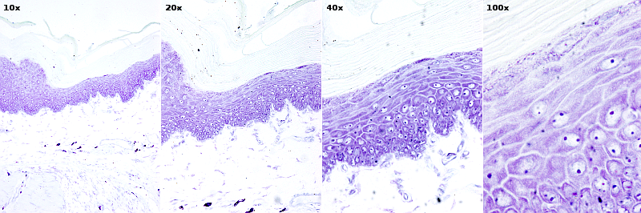
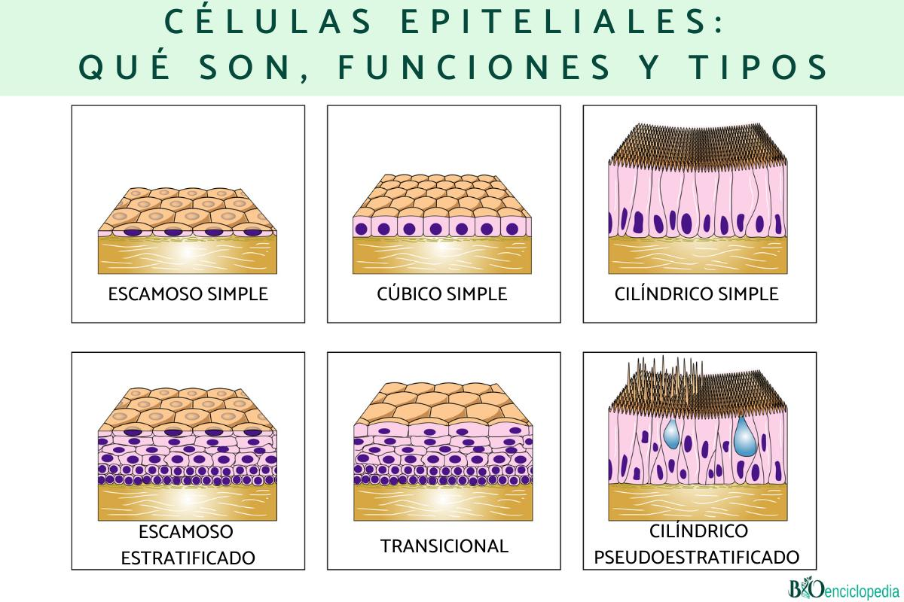
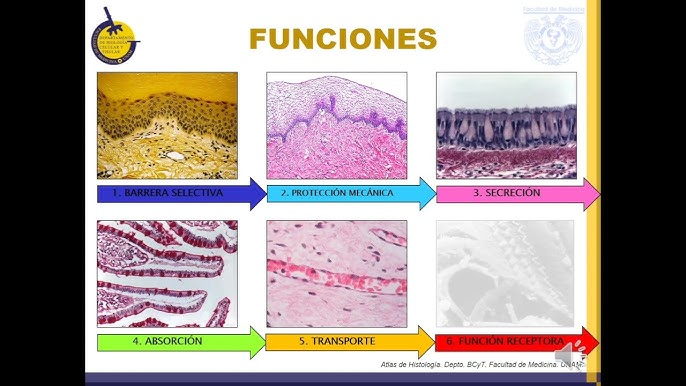
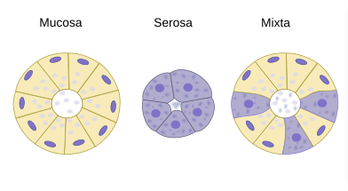
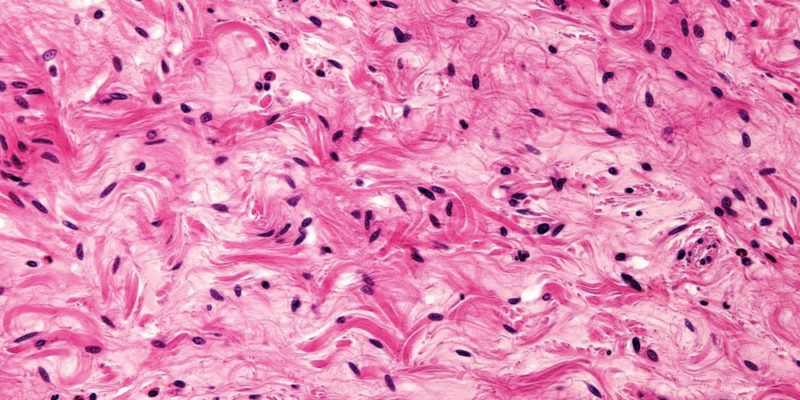

Tejido Epitelial y Conectivo
Definición General
El tejido epitelial es uno de los cuatro tipos fundamentales de tejidos del cuerpo humano. Está formado por células muy unidas entre sí, que recubren superficies externas e internas del organismo y forman glándulas.
Funciones principales:
- Protección (piel)
- Absorción (intestino)
- Secreción (glándulas)
- Sensación (receptores sensoriales)
- Filtración (riñones)
Características generales del tejido epitelial
- Células polares: tienen un polo apical (libre) y uno basal (unido a la membrana basal).
- Avascular: no posee vasos sanguíneos. Se nutre por difusión desde el tejido conectivo.
- Alta tasa de renovación celular (reemplazo constante).
- Presenta uniones celulares: uniones estrechas, desmosomas y uniones comunicantes.
Clasificación del Tejido Epitelial
El tejido epitelial se clasifica según el número de capas celulares y la forma de las células, adaptándose así a las funciones específicas que cumple en distintas partes del cuerpo.
| Clasificación | Tipo | Forma celular | Ejemplos | Función |
|---|---|---|---|---|
| Epitelio simple | Pavimentoso | Plano | Alvéolos, vasos | Intercambio, filtración |
| Cúbico | Cúbico | Túbulos renales, ovario | Secreción, absorción | |
| Cilíndrico | Cilíndrico | Intestino, estómago | Absorción, secreción | |
| Epitelio estratificado | Pavimentoso no queratinizado | Plano | Cavidad oral, vagina | Protección |
| Pavimentoso queratinizado | Plano con queratina | Piel | Protección contra desecación | |
| Cúbico | Cúbico | Glándulas sudoríparas | Conducción, protección | |
| Cilíndrico | Cilíndrico | Uretra | Protección, secreción | |
| Pseudoestratificado | Cilíndrico con cilios | Cilíndrico | Tráquea, bronquios | Movimiento de moco |
| Transicional | Células en cúpula (flexible) | Variable | Vejiga, uréter | Expansión, protección |
Funciones del Tejido Epitelial
Protección:
Forma una barrera que protege los tejidos subyacentes contra daños físicos, químicos, invasión de microorganismos y pérdida de agua. Por ejemplo, la epidermis de la piel protege el cuerpo del ambiente externo.
Absorción:
Permite la captación de sustancias desde el exterior o de una cavidad hacia el interior del organismo. Un ejemplo claro es el epitelio del intestino delgado, que absorbe nutrientes.
Secreción:
Las células epiteliales especializadas forman glándulas que producen y liberan sustancias como enzimas, hormonas, moco o sudor, esenciales para diversas funciones corporales.
Sensación:
Algunos epitelios contienen terminaciones nerviosas especializadas que detectan estímulos sensoriales como el tacto, la temperatura o el dolor.
Filtración:
En ciertos órganos, como los riñones, el epitelio participa en la filtración de líquidos y sustancias, permitiendo la formación de orina y la eliminación de desechos.
Transporte y movimiento:
En epitelios ciliados, como en las vías respiratorias, los cilios ayudan a mover partículas y mucus hacia el exterior, facilitando la limpieza y protección de las vías aéreas.
Glándulas y Secreción
Las glándulas son órganos especializados formados por células epiteliales cuya función principal es la producción y liberación de sustancias químicas necesarias para diversas funciones fisiológicas. Se clasifican en dos grandes grupos según su mecanismo de secreción y destino del producto:
Clasificación de las glándulas:

1. Glándulas Exocrinas
- Secretan sus productos a través de conductos hacia una superficie externa o interna del cuerpo, como la piel o la cavidad digestiva.
- Ejemplos: glándulas sudoríparas, salivales, sebáceas y pancreáticas exocrinas.
- Mecanismos de secreción exocrina:
- Merocrina: La secreción ocurre por exocitosis sin daño celular, como en las glándulas salivales.
- Apocrina: Se libera parte del citoplasma celular junto con la secreción, ejemplo: glándulas mamarias.
- Holocrina: La célula se desintegra completamente para liberar su contenido, ejemplo: glándulas sebáceas.
2. Glándulas Endocrinas
- Secretan hormonas directamente al torrente sanguíneo, sin conductos, para regular procesos fisiológicos a distancia.
- Ejemplos: tiroides, hipófisis, suprarrenales y páncreas endocrino.
- Las células endocrinas forman islotes o cúmulos celulares que facilitan la liberación hormonal.
Tipos de secreciones glandulares:
- Secreción serosa: Líquido acuoso rico en enzimas, como la amilasa en glándulas salivales serosas.
- Secreción mucosa: Líquido viscoso rico en mucinas que lubrica y protege, como en glándulas mucosas del intestino.
- Secreción mixta: Combinación de serosa y mucosa, como en las glándulas salivales submandibulares.
Funciones de las glándulas:
- Regulación hormonal (glándulas endocrinas) para controlar metabolismo, crecimiento y reproducción.
- Producción de enzimas digestivas para la degradación de alimentos.
- Producción de moco para lubricación y protección de superficies.
- Eliminación de productos de desecho o toxinas a través del sudor.
Tejido Conectivo
El tejido conectivo es uno de los principales tejidos del cuerpo humano y cumple funciones vitales de soporte, protección y transporte. Está compuesto por células dispersas en una matriz extracelular rica en fibras y sustancia fundamental. Su estructura permite una gran variedad funcional en diferentes órganos.
Componentes del tejido conectivo:
- Células: Fibroblastos (productores de fibras), macrófagos (defensa), mastocitos (reacción inflamatoria), adipocitos (almacenamiento de grasa), entre otras.
- Matriz extracelular: Compuesta por fibras (colágeno, elastina y reticulares) y sustancia fundamental (gel hidratado que facilita el intercambio de nutrientes y desechos).
Clasificación del tejido conectivo:

- Tejido conectivo laxo: Soporte flexible y nutrición a otros tejidos, encontrado debajo del epitelio y alrededor de órganos.
- Tejido conectivo denso: Rico en fibras colágenas, ofrece resistencia y soporte mecánico (tendones, ligamentos).
- Tejido adiposo: Almacena energía y proporciona aislamiento térmico.
- Tejido cartilaginoso: Soporte flexible en articulaciones y estructuras como nariz y orejas.
- Tejido óseo: Matriz mineralizada que da soporte rígido al cuerpo.
- Tejido sanguíneo: Compuesto por células sanguíneas en plasma, responsable del transporte y defensa.
Funciones del tejido conectivo:
- Soporte estructural para órganos y tejidos.
- Protección de órganos internos mediante tejidos especializados (hueso, cartílago).
- Almacenamiento y transporte de sustancias (grasa, nutrientes, células inmunes).
- Defensa inmunológica gracias a células como macrófagos y mastocitos.
- Reparación y cicatrización de tejidos tras lesiones.